Vous êtes nombreux sur les forums à vous demander comment l’AAH (Allocation Adulte Handicapé) est calculée par la CAF, suivant votre situation familiale et vos revenus. Les réponses apportées sont bien souvent approximatives, voir complètement fausses. Il est même courant - expériences personnelles répétées - que les conseillers de la CAF fournissent des réponses inexactes, et ce par manque d’une documentation claire. Ajouté à cela que les lois changent périodiquement et que les administrations manquent d’ (in)formations pour se mettre à la page, et alors essayer de comprendre le fonctionnement de la machine devient très compliqué. Pourtant je trouve essentiel d’être en mesure de reproduire les calculs de la CAF, d’une part pour savoir pourquoi telle ou telle somme se retrouve versée ou amputée sur notre compte en banque, et d’autre part pour pouvoir anticiper les futurs versements et changements de situations. Gardez à l’esprit que comprendre, ce n’est pas subir…
L’objet de cet article est donc de faire le point sur l’AAH, en allant chercher à la source les informations. Je m’appuierai pour cela sur les textes de loi pour en dégager les éléments pertinents qui justifient la façon dont la CAF calcule vos prestations. Mais rassurez vous, je m’efforcerai d’illustrer mes explications par des exemples concrets issus entre autres de ma situation personnelle pour confirmer que les calculs réalisés correspondent bien à ceux effectués par la CAF.
L’allocation adulte handicapé : conditions, déclaration et complément de ressources
Qu’est-ce que l’AAH et quelles sont les conditions pour percevoir cette allocation ?
L’allocation aux adultes handicapé (AAH) est une prestation sociale versée en France par la CAF aux personnes atteintes d’un handicap ou d’une maladie chronique invalidante, créée par la loi du 30 juin 1975. C’est un minimum social dont le versement est soumis à des conditions médicales examinées par les CDAPH (ex COTOREP) et des conditions administratives étudiées par les organismes payeurs.1
1 Introduction de l’AAH sur Wikipédia - lien
Les conditions d’attribution sont les suivantes :
- Condition d’âge : être âgé d’au moins 20 ans donc ne pouvant plus prétendre à l’allocation de l’éducation d’enfant handicapé (AEEH). Le versement prend fin à l’âge légal de la retraite.
- Condition de résidence : résider en France de manière permanente, être de nationalité française ou étrangère dont la situation est régularisée.
- Condition d’incapacité permanente : la personne qui prétend à l’AAH doit avoir soit une incapacité permanente d’au moins 80%, soit une incapacité permanente entre 50% et 79% et dont on reconnait une restriction d’accès substantielle et durable à l’emploi, c’est-à-dire une difficulté importante de l’accès à l’emploi. Ces conditions médicales sont appréciées par les CDAPH.
- Conditions de ressources : la personne peut bénéficier de l’AAH si ses ressources (ou plus exactement une certaine assiette) sont inférieures à un certain plafond. Nous préciserons tout cela au moment de détailler la méthode de calcul.
Pour une description complète des conditions relatives à l’AAH, se référer aux notes juridiques de l’APF.2
2 Notes juridiques de l’APF (p.4-15) - lien
Quelles sont les ressources qu’il faut et ne faut pas déclarer à la CAF ?
Le fonctionnement de la machine “CAF” est relativement opaque. On peut la représenter comme une boite noire, c’est-à-dire qu’on sait ce qu’on lui donne en entrée (la CAF demande de déclarer ses ressources), et on sait ce qu’on obtient à la sortie (le montant de l’AAH versé sur notre compte en banque). Mais on n’a pas vraiment idée de ce qui se passe à l’intérieur de la machine, c’est-à-dire comment est calculé le montant versé en fonction des ressources déclarées. C’est ce que cet article va vous expliquer, en regardant ce qui se passe sous le capot 😉

Avant de s’attaquer à la méthode de calcul, il est bon dans un premier temps de savoir ce que la CAF veut que l’on déclare comme ressources.
Sur la déclaration des ressources que la CAF vous demande de remplir, il vous est demandé de déclarer l’ensemble de vos salaires net imposables (sans abattement des 10% de frais professionnels ou réels). Le montant de votre salaire net imposable figure sur votre bulletin de paie (cf. Comprendre son bulletin de paie). Evidemment si vous n’avez aucun revenu (salaire ou autres natures : fonciers, etc) vous cochez “Absence de ressources” = 0 € et vous toucherez l’AAH à taux plein, qui à ce jour s’élève à 790,18 €.
Exemple : Sur ma fiche de paie perso, le salaire mensuel net imposable est donné dans la case que j’ai colorié en rose. Ainsi sur l’année cela représente un total de (sans virgule) :
12 x 1471 = 17 652 €
Remarque : c’est également ce montant que je devrai déclarer aux impôts dans la case 1AJ (cf. Quels impôts pour les personnes handicapées ?).

N. B. : Le fait que la CAF considère les salaires avant abattement des frais professionnels est sujet à polémique, j’en fais l’analyse dans cet article : Ambigüité sur la nature des ressources à déclarer à la CAF pour le calcul de l’AAH. Mais je vous conseille dans un premier temps de finir de lire les explications sur l’AAH avant d’y jeter un oeil.
La liste des revenus à déclarer est la même que pour les impôts3. La CAF énumère celle-ci dans la notice de la déclaration des ressources :
3 Code général des impôts - lien
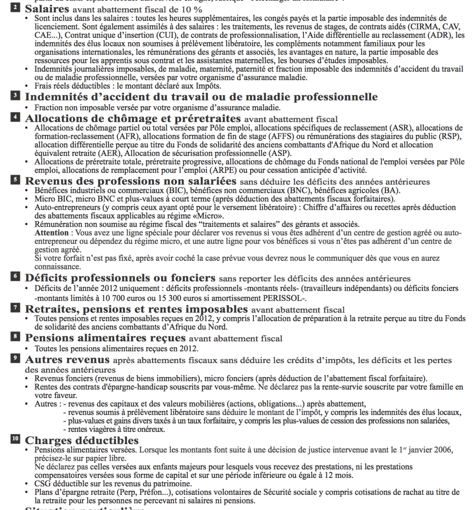
Enfin voici une liste non exhaustive des revenus à ne pas déclarer aux impôts. Par exemple en ce qui me concerne, je n’ai pas eu à déclarer les rémunérations de stages effectués pendant mes études, dès lors que l’on a moins de 25 ans et que le total sur l’année est inférieur à 3 fois le smic brut.
Quelle est la différence entre le mode de gestion annuel et trimestriel ?
- Gestion annuelle : Lorsque le bénéficiaire de l’AAH ne perçoit pas de revenu d’activité professionnelle ou est admis dans un établissement ou un service d’aide par le travail (ESAT)4, les ressources retenues sont celles perçues pendant l’année civile de référence5, qui est l’avant-dernière année précédant la période de paiement.
4 Bénéficiaire AAH sans revenu ou en ESAT, art. R.581-4 du code de la sécurité sociale - lien
5 Définition de l’année civile de référence en gestion annuelle, art. R.532-3 du code de la sécurité sociale - lien
Exemple : Pour le calcul de l’AAH mensuelle de l’année 2014, la CAF prend en compte les revenus de l’année 2012. De même les APL seront appréciées à partir de l’année N-2.
- Gestion trimestrielle : Lorsque le bénéficiaire de l’AAH perçoit, au jour du dépôt de la demande ou en cours de service, des revenus d’activité professionnelle, les ressources retenues sont les revenus perçus au cours du trimestre de référence, qui correspond aux trois mois civils précédant la période de paiement dite aussi de droits.6
6 Définition du trimestre de référence en gestion trimestrielle, art. R.521-4-1 du code de la sécurité sociale - lien
Exemple : Le calcul de l’AAH mensuelle qui me sera versée au cours du trimestre «Juillet, Août, Septembre 2014» (dit de droit) est basée sur les revenus perçus au cours du trimestre précédent (dit de référence) « Avril, Mai, Juin 2014 ». Puis le trimestre «Juillet, Août, Septembre 2014» devient le nouveau trimestre de référence pour le calcul des droits de «Octobre, Novembre, Décembre», et ainsi de suite. Capito ? 🙂
Sous quelles conditions puis-je toucher la Majoration pour la Vie Autonome (MVA) ou le complément de ressources ?
- Majoration pour la Vie Autonome7 : la MVA est un complément à l’AAH qui s’élève à 104,77 € par mois.
7 Majoration pour la Vie Autonome sur le site de l’APF - lien
Pour y avoir droit il faut répondre aux conditions suivantes :
- Avoir un taux d’incapacité d’au moins 80%
- Disposer d’un logement indépendant ouvrant droit à l’APL
- Ne pas percevoir de revenu d’activité à caractère professionnel propre
- Percevoir l’AAH à taux plein
- Complément de ressource8 : Il a la même utilité et les même conditions que la MVA, à ceci près que son montant s’élève à 179,31 € , et qu’il concerne uniquement les personnes de moins de 60 ans présentant un taux d’incapacité d’au moins 80% et dont les capacités de travail sont reconnues inférieure à 5%.
8 Complément de ressource sur le site de l’APF - lien
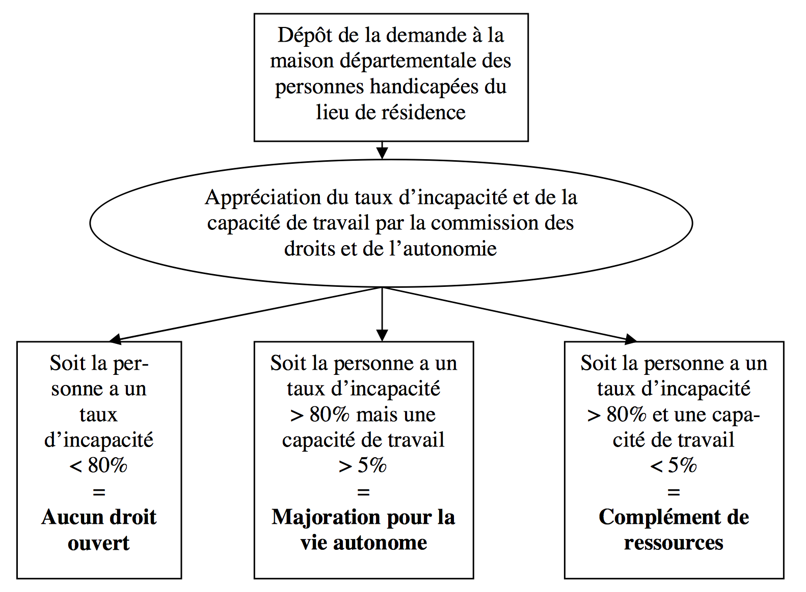
Explications du mode de calcul de l’AAH
Si je travaille est-ce que je vais perdre l’AAH ? Jusqu’où peut-on cumuler l’AAH différentielle et ses revenus ?
Comme vous avez pu le constater avec mon exemple personnel, je travaille et j’ai un salaire de 1471,53 € net imposable par mois, ce qui me fait toucher 81,01 € d’AAH mensuelle. Donc non, on ne perd pas totalement l’AAH, celle-ci diminue en fonction des revenus que l’on perçoit, c’est une AAH différentielle.
Important : A partir de la date où l’on commence à travailler, on cumule notre salaire avec l’AAH à taux plein pendant 6 mois. Seulement ensuite le calcul de l’AAH différentielle vu précédemment est appliqué.
Exemple : J’ai commencé à travailler le 1er octobre 2013, le cumul de mon salaire + AAH taux plein a ainsi duré jusqu’au mois de mars 2014. Ensuite l’AAH différentielle s’est appliquée et je touche depuis avril 2014 81,01 € par mois d’ AAH différentielle. Vous pouvez constater que malgré avoir touché l’AAH à taux plein pendant ces six premiers mois, je n’avais tout de même plus le droit à la MVA, puisque la condition de non activité professionnelle n’était pas remplie.
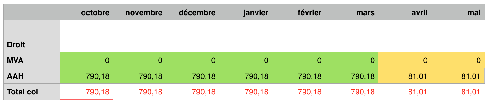
Pour des exemples plus compliqués de cumul intégrale sur des mois non consécutifs (fenêtres glissantes) vous pouvez vous reporter à la circulaire de la CAF page 55 [AAH 48]11
11 Circulaire n°2010-13 du 17 novembre 2010, p.55 AAH 48 - lien
A partir de quels revenus ne touche-t-on plus du tout d’AAH ?
Pour répondre à cette question, le plus simple est de tracer la courbe qui représente l’AAH différentielle versée, en fonction des revenus. Vous avez de la chance, j’ai fait le boulot pour vous 😉
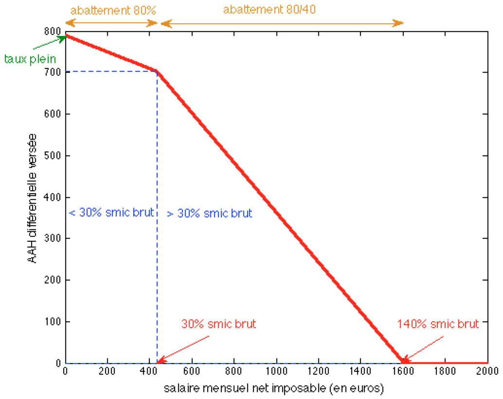Commentaire du graphique :
Pour des salaires mensuels inférieurs à 30% du smic brut mensuel (5203,37/12 = 433,61 €), on applique l’abattement grossier de 80%, ce qui explique une faible pente. Puis au delà on applique les deux abattement 80% et 40% sur les tranches correspondantes, l’assiette retenue est donc plus conséquente que dans le premier cas, ce qui explique une décroissance plus forte de l’AAH, jusqu’à être nulle pour un salaire mensuel net imposable de 1606 €, soit 1,4 fois le smic brut mensuel.
Maintenant représentons les ressources totales perçues (revenu + AAH différentielle) en fonction du revenu :
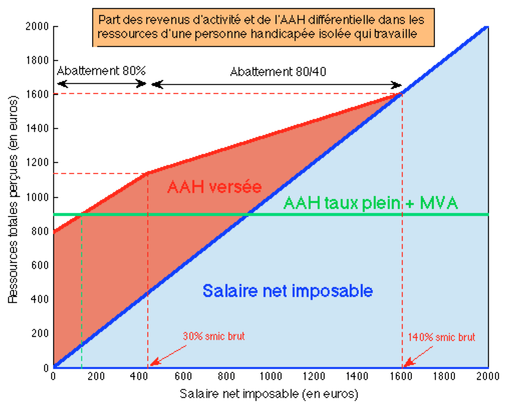
Commentaire du graphique :
Ce qui est intéressant avec cette représentation (AAH+salaire), c’est qu’on peut visualiser le piège dont je parlais tout à l’heure pour les très faibles revenus. En effet on remarque que pour de tels revenus entre 0 € et 131 €, la courbe en rouge représentant la somme de l’AAH différentielle et du salaire, se situe en dessous de la droite AAH taux plein + MVA. Autrement dit si vous gagnez moins 131 € par mois, soit 1572 € sur l’année, vous allez perdre de l’argent comme ce fut mon cas lorsque j’ai déclaré 770 € de revenus en 2011. Evidemment, vous allez me dire que rare sont les boulots, même à temps réduit, qui rapporte moins de 131 € par mois, mais cela est valable pour toute autre nature de revenus, comme par exemple des intérêts d’épargne de quelques euros qui peuvent faire pencher la balance du mauvais côté.
Puisque l’on est imposable uniquement sur les revenus et pas l’AAH, mieux vaut-il gagner plus et payer plus d’impôt, ou gagner moins avec plus d’AAH ?
C’est en me posant cette question que j’en suis venu à étudier le fonctionnement des impôts, et en particulier du traitement spécifique réservé aux personnes invalides, dans l’article “Quels impôts pour les personnes handicapées ?”.
Pour répondre à cette question, il faut cette fois tracer la courbe qui représente l’impôt à payer (mensualisé) en fonction du salaire net imposable :
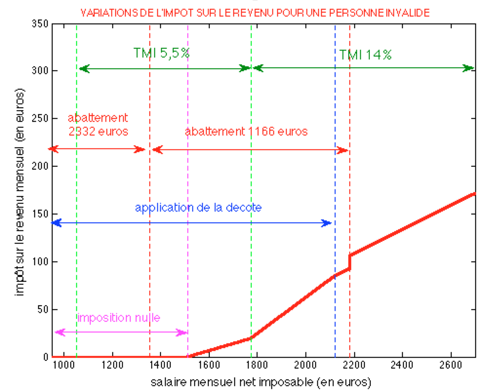
On constate que jusqu’à hauteur de 1513 € de salaire net imposable par mois, une personne invalide ne payera aucun impôt sur le revenu. Par conséquent il n’y a cette fois-ci aucun écueil, il faut aussi reconnaître lorsque les choses sont bien faites 🙂
On peut reprendre le graphique précédent AAH différentielle + salaire, en tenant compte de l’imposition, c’est-à-dire que l’on représente AAH différentielle + salaire après impôt :
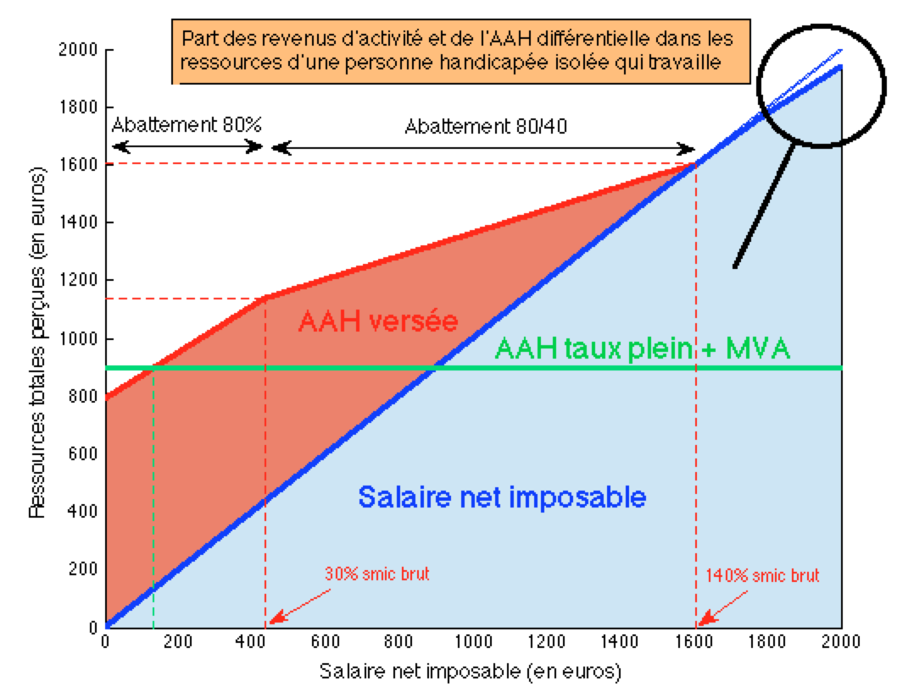
Commentaire du graphique : on commence à percevoir les effets de l’imposition quand l’AAH différentielle devient négligeable puis nulle.
Que se passe-t-il si je ne déclare pas mes revenus chaque trimestre ?
Si vous ne renvoyez pas votre déclaration trimestrielle, une avance est versée automatiquement pendant deux mois. Son montant est égal à 50% du montant de la dernière allocation calculée.12
12 Article R.821-4-5 du code de la sécurité sociale - lien
Attention ! En l’absence de fourniture de la DTR constatée au 3ème mois du trimestre, l’avance est transformée en INDU, et l’indu est récupérable sur les autres prestations/allocations (APL par exemple) en raison du principe de la fongibilité.
Que se passe-t-il si j’arrête brusquement de travailler ? Vais-je devoir attendre avant de pouvoir retoucher l’AAH à taux plein ?
La condition pour pouvoir rebasculer dans le mode de calcul annuel est d’avoir cessé toute activité professionnelle pendant 9 mois consécutifs . Dans la pratique, un point est fait chaque 1er janvier, il faudra donc attendre au minimum 9 mois et au maximum 20 mois pour pouvoir rebasculer dans le mode de calcul annuel, selon la date à laquelle l’activité a pris fin.13
Exemple14 :
- si la personne cesse son activité avant ou au plus tard au 1er avril, les 9 mois consécutifs requis de cessation d’activité professionnelle seront bien comptabilisés au 1er janvier de l’année considérée: la personne pourra alors sortir du système de gestion trimestrielle.
- Si, en revanche, la personne cesse son activité après le 1 avril ou plus tard, les 9 mois consécutifs requis de cessation d’activité professionnelle ne seront pas comptabilisés au 1er janvier de l’année considérée et il faudra attendre le 1er Janvier de l’année suivante.
Mais rassurez vous, cela ne signifie pas que vous ne toucherez plus d’AAH pendant 9 mois ou plus ! Cela veut simplement dire que vous devrez continuer à envoyer vos déclarations trimestrielles pendant ce temps là, mais l’AAH continuera d’être versée ! Ensuite une fois repassé en gestion annuelle vous n’aurez plus qu’à déclarer vos ressources une fois dans l’année.
L’AAH dans le cadre de la famille et du couple
Comment est calculé le quotient familial de la CAF et à quoi sert-il ?
Vous connaissez tous certainement le quotient familial si cher aux impôts… (cf. Quels impôts pour les personnes handicapées ?). Et bien : Attention : le quotient familial de la CAF ne se calcule pas comme celui des impôts ! Allons faire un tour sur le site de la CAF, le quotient familial, je cite :
Il est utilisé par la Caf, par exemple pour l’attribution d’aides financières individuelles, mais aussi par les mairies, les Ccas, les associations du secteur périscolaire ou accueil de loisirs pour appliquer des tarifs en fonction de la situation financière de la famille.
Quant au calcul à proprement parlé :
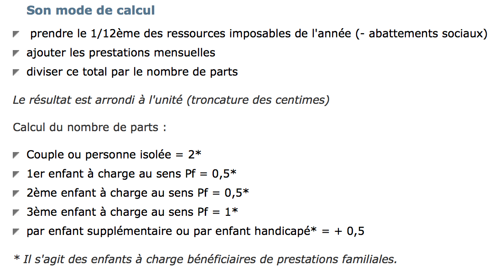
Remarquez que le nombre de part considéré est égal à 2 par la CAF dans tous les cas, tandis que pour les impôts une personne isolée valide valait une part, et une personne isolée invalide valait 1,5 parts.
Exemple : Précédemment, on a vu que lorsque j’avais déclaré en 2011 : 770 € sur l’année, je touchais une AAH de 777,35 € par mois. J’avais également droit à l’APL qui s’élevait à 174,33 € par mois. Désignons chacune de ces quantités :prestation mensuelle = AAH = 777,35 €
revenus imposables = revenus déclarés + APL avant CRDS
J’ai expliqué dans un autre article ce qu’est l’impôt de CRDS (cf. Comprendre son bulletin de paie), qui s’applique à l’APL, bien que l’APL ne soit pas prise en compte pour l’impôt sur le revenu15. L’impôt CRDS représente 0,5% des ressources sur lesquelles il s’applique, ainsi l’APL avant CRDS est :
15 Article L.351-10 du code de l’habitat et de la construction - lien
APL avant CRDS = 174,33 / 0,995 = 175,20 €
Faisons à présent le bilan :
Quotient familial = (revenus imposables/12+prestation mensuelle)/nb de parts
Soit :
Quotient familial = (770/12 + 175,20 + 777,35)/2 = 508 €
La preuve en image :
Que se passe-t-il si je me déclare en couple ou me marie ? Mon AAH va-t-elle être affectée ? Et si oui, dans quelle mesure ?
Cet article se veut être neutre et davantage didactique, pour comprendre les choses. Pour aborder la question plus en détail vous pouvez lire mon dernier article :
Le mariage pour tous … sauf pour les personnes handicapées !
Sachez d’abord qu’aux yeux de la CAF, être marié ou en concubinage mène au même résultat dès lors que vous vivez en couple sous le même toit. Ainsi l’attribution d’une prestation sociale ne se fait plus en fonction de ses propres revenus, mais des ressources du foyer.
Dans un cas comme dans l’autre donc : OUI, se déclarer en couple va diminuer le montant de l’AAH du bénéficiaire si son conjoint a des revenus !
Pour répondre à la question “Dans quelle mesure ?”, il faut comprendre comment l’assiette des ressources du conjoint est calculée (l’assiette du bénéficiaire elle, on l’a vu, s’obtient sur le mode de calcul abattement 80/40). D’après les sources officiels16 et le tableau17 suivant de la CAF :
16 Article R.821-4 du code de la sécurité sociale - lien
17 Circulaire 2010-13 du 17 novembre 2010, p. 43, AAH 36 - lien
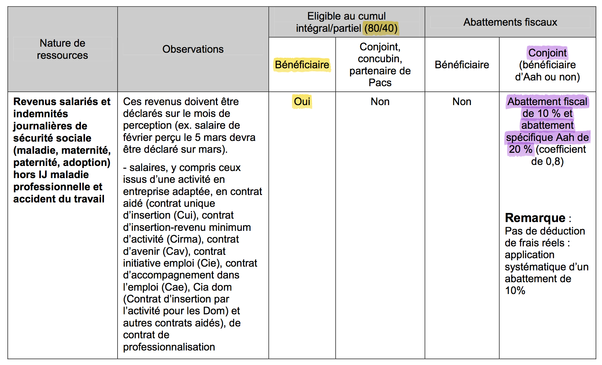
On comprend que l’assiette des ressources du conjoint s’obtient de la manière suivante :
assiette conjoint = revenus annuels conjoint - 10% - 20%
Ou encore
assiette conjoint = revenus annuels conjoint x 0,9 x 0,8
Ainsi l’assiette des ressources du foyer est la somme des assiettes :
assiette du foyer = assiette bénéficiaire + assiette conjoint
Cette assiette commune va ensuite être comparé à un plafond de ressources pour déterminer le montant de l’AAH du bénéficiaire. Le plafond de ressources pour le couple est égal au double du plafond de ressources d’une personne isolée, soit :
plafond de ressources du couple = 9482,16 x 2 = 18 964,32 €
Résumons tout cela par un joli schéma :
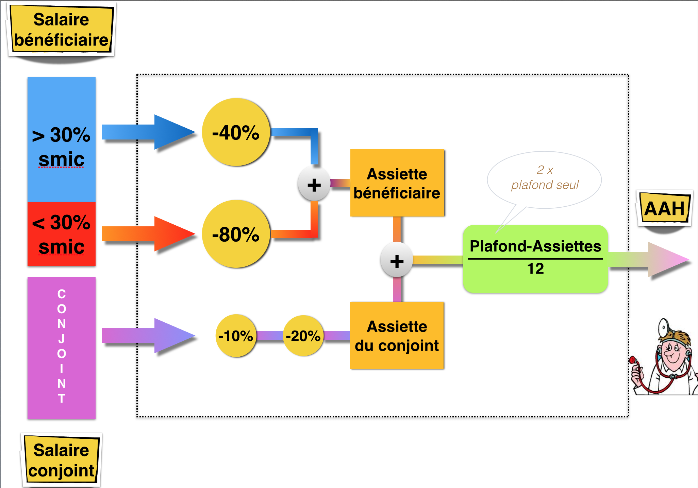
Maintenant, place aux exemples !
On va considérer plusieurs cas de figures pouvant se présenter au couple. Le couple test est formé par Mademoiselle Andy, bénéficiaire de l’AAH, et Monsieur Pierre qui initialement gagne le smic (oui le même bonhomme que pour l’aventure des impôts : Quels impôts pour les personnes handicapées ?).
Cas n°1 : Andy ne travaille pas, touchait jusqu’alors l’AAH à taux plein (790,18 € par mois), et décide de s’installer vivre avec Pierre qui gagne le smic (1128,70 € par mois). [Pierre qui roule n’amasse pas mousse Haha -_-’]
Puis Andy ne travaille pas (et ne perçoit par ailleurs aucun autre type de revenus), ses ressources, comme son assiette, sont nulles. Calculons l’assiette du conjoint :
assiette de Pierre = (1128,70 x 12) x 0,9 x 0,8 = 9751,92 €
qui correspond du coup à l’assiette du foyer :
assiette du foyer = assiette d’Andy + assiette de Pierre = 0 + 9751,92 = 9751,92 €
On en déduit l’AAH d’Andy :
AAH d’Andy = (plafond couple - assiette du foyer)/12
soit :
AAH d’Andy = (18 964,32 - 9751,92)/12 = 768 € par mois
Cas n°2 : Andy ne travaille pas, et Paul, le cousin de Pierre, lui trouve un job dans sa boite. Désormais Pierre est rémunéré 1500 € par mois. Calculons l’AAH qui sera versée à Andy :
assiette de Pierre = (1500 x 12) x 0,9 x 0,8 = 12 960 €
AAH d’Andy = (18 964,32 - 12 960)/12 = 500 € par mois
Du fait que Pierre gagne maintenant 1500 € à la place du smic, ampute (au sens figuré, elle est déjà suffisamment handicapée!) à Mademoiselle Andy près de 300 € sur son AAH.
Cas n°3 : Mademoiselle Andy tombe amoureuse de Jacques, son kiné, elle se sépare alors de Pierre et part vivre chez Jacques, qui gagne 2200 € par mois.
assiette de Jacques = (2200 x 12) x 0,9 x 0,8 = 19 008 €
Comme l’assiette de Jacques est supérieure au plafond des ressources du couple :
assiette de Jacques > 18 964,32 € ==> AAH d’Andy = 0 €
Résultat : Mademoiselle Andy, bien qu’éperdument amoureuse de Jacques, se retrouve entièrement dépendante financièrement de son conjoint…
Visualisons la façon dont décroît l’AAH du bénéficiaire ne pouvant pas travailler, en fonction des revenus de son conjoint :
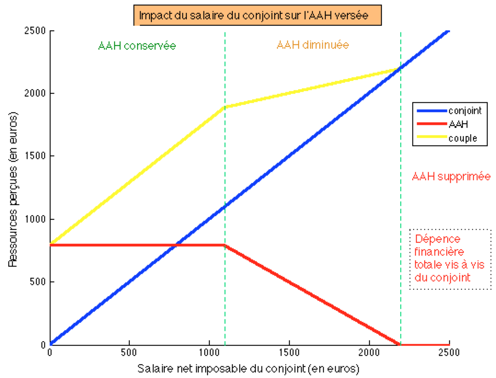
Commentaires du graphique :
- Si son conjoint gagne moins de 1097 €, l’AAH d’Andy n’est pas affectée.
- Si son conjoint gagne entre 1097 € et 2195 €, l’AAH d’Andy décroît vers 0.
- Si son conjoint gagne plus de 2195 €, l’AAH d’Andy est réduit à 0 €
Cas n°4 : Mademoiselle Andy, ne supportant plus cette situation, décide de rompre… Jacques, qui a du mal à se remettre de sa rupture, décide de quitter son cabinet libéral, de changer de région, et retrouve du boulot dans un centre de rééducation, un peu moins bien payé, 1800 € par mois. (rappelez moi de ne jamais écrire un roman à l’eau de rose, je ne suis visiblement pas doué pour ça :D). Jacques le tombeur, finit par se consoler avec une autre de ses patientes (incorrigible…), prénommée Françoise, qui elle, fort heureusement, a la possibilité de travailler à mi-temps. Françoise est également bénéficiaire de l’AAH et gagne 500 € par mois.
Calculons l’assiette de Françoise (issue de l’abattement 80/40) :
assiette de Françoise = (5203,37) x 0,2 + (12 x 500 - 5203,37) x 0,6 = 1518 €
Avant d’être en couple avec Jacques, celle-ci recevait donc :
AAH de Françoise avant d’être avec Jacques = (9482,16 - 1518,55)/12 = 663 €
Calculons l’assiette de Jacques :
assiette de Jacques = (1800 x 12) x 0,9 x 0,8 = 15 552 €
L’assiette commune est donc :
assiette du couple = 15 552 + 1518 = 17 070 €
Finalement, après s’être mise en couple avec Jacques, Françoise recevra :
AAH de Françoise après être avec Jacques = (18 964,32 - 17 070)/12 = 158 €
Est-ce la même chose si le conjoint est également bénéficiaire de l’AAH ?
Oui et Non. Si le conjoint ne travaille pas alors non, car les revenus qui affectent l’AAH du premier bénéficiaire, sont des revenus imposables, et l’AAH ne l’est pas.18. En revanche si le conjoint travaille (ou perçoit d’autres types de revenus) alors ses ressources sont prises en compte dans le calcul de l’AAH du premier bénéficiaire, et vice versa. Autrement dit l’assiette du conjoint, bénéficiaire de l’AAH ou non, est toujours prise en compte.
18 Article 81 alinéa 2 du code des impôts - lien
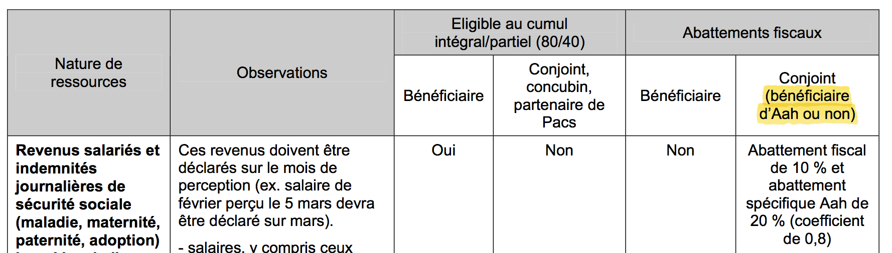
C’est terminé pour ce tutoriel, j’espère qu’il vous aura été utile, et si vous avez des questions n’hésitez pas à laisser un commentaire. Si j’ai une réponse je pourrai l’ajouter sur cette page aux questions que je viens de traiter, pour constituer une FAQ (Foire Aux Questions). N’hésitez pas non plus à prendre rendez-vous auprès de conseillers de votre CAF pour connaître vos droits.
Note de fin : La plupart des questions abordées ainsi que les articles de loi précédemment cités, sur les nouvelles réformes concernant l’AAH depuis 2011, sont regroupés au sein du Décret n° 2010-1403 du 12 novembre 2010 disponible sur le site legifrance.19
19 Décret n° 2010-1403 du 12 novembre 2010 sur legifrance - lien
Annexes : code Matlab des différents graphiques réalisés
- Fonction
abattements_seul.m: calcule l’AAH versée d’un bénéficiaire seul en fonction de son salaire.
% Calcul pour un bénéficiaire seul l'AAH versée en fonction
% du salaire mensuel net imposable qu'il perçoit
function aah = abattements_seul(salaire)
global smic;
global plafond_seul;
salaire_max = (plafond_seul+0.4*(smic*0.3*12))/(12*0.6);
if (salaire >= 0) && (salaire <= smic*0.3)
assiette = round(0.2*(salaire*12));
elseif (salaire > smic*0.3) && (salaire < salaire_max)
assiette = round(0.2*(smic*0.3*12)+0.6*(salaire*12-smic*0.3*12));
elseif (salaire > salaire_max)
assiette = plafond_seul;
else
assiette = plafond_seul;
end
aah = (plafond_seul-assiette)/12;
end- Script
AAHdifferentielle.m: trace la courbe de l’AAH versée pour un bénéficiaire seul en fonction du salaire.
global smic plafond_seul aah_taux_plein mva;
% Chiffres de l'année 2014
smic = 1445.38;
aah_taux_plein = 790.18;
plafond_seul = 12*aah_taux_plein;
salaire_max = 2000;
impots = 0;
abs_salaires = 0:0.1:salaire_max;
aah_differentielle = zeros(1,length(abs_salaires));
for i=1:length(aah_differentielle)
aah_differentielle(i) = abattements_seul(abs_salaires(i));
end
salaire_inflexion_min = smic*0.3
salaire_inflexion_max = (plafond_seul+0.4*(smic*0.3*12))/(12*0.6)
aah_inflexion_min = abattements_seul(salaire_inflexion_min)
aah_inflexion_max = abattements_seul(salaire_inflexion_max)
figure1 = figure('Color',[1 1 1]);;
plot(abs_salaires,aah_differentielle,'Color','r','LineWidth',2);
hold on;
plot([salaire_inflexion_min salaire_inflexion_min],[0 aah_inflexion_min],'--b')
plot([0 salaire_inflexion_min],[aah_inflexion_min aah_inflexion_min],'--b')
plot([salaire_inflexion_max salaire_inflexion_max],[0 aah_inflexion_max],'--b')
plot([0 salaire_inflexion_max],[aah_inflexion_max aah_inflexion_max],'--b')
% Create xlabel
xlabel({'salaire mensuel net imposable (en euros)'},'FontSize',12);
% Create ylabel
ylabel({'AAH différentielle versée'},'FontSize',12);
% Create textbox
annotation(figure1,'textbox',...
[0.00992857142857143 0.823809523809524 0.175785714285714 0.0571428571428577],...
'String',{'taux plein'},...
'FontSize',12,...
'FitBoxToText','off',...
'LineStyle','none',...
'Color',[0 0.498039215686275 0]);
% Create arrow
annotation(figure1,'arrow',[0.0732142857142857 0.133928571428571],...
[0.879952380952381 0.911904761904762],'Color',[0 0.498039215686275 0]);
% Create textbox
annotation(figure1,'textbox',...
[0.72992857142857 0.160952380952382 0.196857142857144 0.0690476190476193],...
'String',{'140% smic brut'},...
'FontSize',12,...
'FitBoxToText','off',...
'LineStyle','none',...
'Color',[1 0 0]);
% Create arrow
annotation(figure1,'arrow',[0.392857142857143 0.298214285714286],...
[0.175190476190476 0.10952380952381],'Color',[1 0 0]);
% Create arrow
annotation(figure1,'arrow',[0.823214285714286 0.746428571428571],...
[0.175190476190476 0.10952380952381],'Color',[1 0 0]);
% Create textbox
annotation(figure1,'textbox',...
[0.333142857142857 0.161904761904762 0.165071428571429 0.0690476190476193],...
'String',{'30% smic brut'},...
'FontSize',12,...
'FitBoxToText','off',...
'LineStyle','none',...
'Color',[1 0 0]);
% Create textbox
annotation(figure1,'textbox',...
[0.128142857142857 0.434761904761907 0.193285714285715 0.0690476190476193],...
'String',{'< 30% smic brut'},...
'FontSize',12,...
'FitBoxToText','off',...
'LineStyle','none',...
'Color',[0 0 1]);
% Create textbox
annotation(figure1,'textbox',...
[0.308857142857142 0.433809523809526 0.193285714285715 0.0690476190476193],...
'String',{'> 30% smic brut'},...
'FontSize',12,...
'FitBoxToText','off',...
'LineStyle','none',...
'Color',[0 0 1]);
% Create textbox
annotation(figure1,'textbox',...
[0.132071428571428 0.931428571428575 0.193285714285715 0.0690476190476193],...
'String',{'abattement 80%'},...
'FontSize',12,...
'FitBoxToText','off',...
'LineStyle','none',...
'Color',[0.870588235294118 0.490196078431373 0]);
% Create textbox
annotation(figure1,'textbox',...
[0.412785714285713 0.932857142857147 0.193285714285715 0.0690476190476193],...
'String',{'abattement 80/40'},...
'FontSize',12,...
'FitBoxToText','off',...
'LineStyle','none',...
'Color',[0.870588235294118 0.490196078431373 0]);
% Create doublearrow
annotation(figure1,'doublearrow',[0.130357142857143 0.298214285714286],...
[0.944238095238095 0.942857142857143],...
'Color',[0.870588235294118 0.490196078431373 0]);
% Create doublearrow
annotation(figure1,'doublearrow',[0.307142857142857 0.75],...
[0.941857142857143 0.942857142857143],...
'Color',[0.870588235294118 0.490196078431373 0]);- Fonction
AAHcumul.m: représente la courbe salaire + AAH différentielle en fonction du salaire, avec ou sans la prise en compte des impôts.
global smic plafond_seul aah_taux_plein mva;
% Chiffres de l'année 2014
smic = 1445.38;
aah_taux_plein = 790.18;
plafond_seul = 12*aah_taux_plein;
mva = 104.77;
aah_mva = aah_taux_plein+mva
salaire_max = 2000;
impots = 0;
abs_salaires = 0:0.1:salaire_max;
ord_ressources_tot = zeros(1,length(abs_salaires));
abs_salaires_impots = zeros(1,length(abs_salaires));
if impots
for i=1:length(ord_ressources_tot)
abs_salaires_impots(i) = abs_salaires(i)-imposition(abs_salaires(i));
ord_ressources_tot(i) = abattements_seul(abs_salaires(i))+abs_salaires_impots(i);
end
else
for i=1:length(ord_ressources_tot)
ord_ressources_tot(i) = abattements_seul(abs_salaires(i))+abs_salaires(i);
end
end
salaire_critique_min = mva/0.8
salaire_inflexion_min = smic*0.3
salaire_inflexion_max = (plafond_seul+0.4*(smic*0.3*12))/(12*0.6)
ressource_critique_min = abattements_seul(salaire_critique_min)+salaire_critique_min
ressource_inflexion_min = abattements_seul(salaire_inflexion_min)+salaire_inflexion_min
ressource_inflexion_max = abattements_seul(salaire_inflexion_max)+salaire_inflexion_max
figure1 = figure('Color',[1 1 1]);;
hold on;
area(abs_salaires,ord_ressources_tot,'Facecolor',[231 108 86]/255);
if impots
area(abs_salaires,abs_salaires_impots,'Facecolor',[194 222 242]/255);
else
area(abs_salaires,abs_salaires,'Facecolor',[194 222 242]/255);
end
plot(abs_salaires,ord_ressources_tot,'Color','r','LineWidth',2);
if impots
plot(abs_salaires,abs_salaires,'Color','b','LineWidth',1);
else
plot(abs_salaires,abs_salaires,'Color','b','LineWidth',2);
end
plot(abs_salaires,abs_salaires_impots,'Color','b','LineWidth',2);
plot([0 salaire_max],[0 salaire_max],'Color',[0 0 1],'LineWidth',1);
plot([0 salaire_max],[aah_mva aah_mva],'Color',[1 215 96]/255,'LineWidth',2)
plot([salaire_critique_min salaire_critique_min],[0 ressource_critique_min],'Color',[1 215 96]/255,'LineWidth',1,'Linestyle','--')
plot([salaire_inflexion_min salaire_inflexion_min],[0 ressource_inflexion_min],'--r')
plot([0 salaire_inflexion_min],[ressource_inflexion_min ressource_inflexion_min],'--r')
plot([salaire_inflexion_max salaire_inflexion_max],[0 ressource_inflexion_max],'--r')
plot([0 salaire_inflexion_max],[ressource_inflexion_max ressource_inflexion_max],'--r')
% Create xlabel
xlabel({'Salaire net imposable (en euros)'},'FontSize',12);
% Create ylabel
ylabel({'Ressources totales perçues (en euros)'},'FontSize',12);
%title(char('Part des revenus d''activité et de l''AAH différentielle dans les ressources','d''une personne handicapée isolée qui bénéficie d''un emploi'));
% Create textbox
annotation(figure1,'textbox',...
[0.324214285714285 0.500000000000001 0.306142857142857 0.0761904761904777],...
'String',{'AAH versée'},...
'FontWeight','bold',...
'FontSize',18,...
'FitBoxToText','off',...
'LineStyle','none',...
'Color',[1 0 0]);
% Create textbox
annotation(figure1,'textbox',...
[0.3875 0.264285714285715 0.457142857142857 0.064285714285715],...
'String',{'Salaire net imposable'},...
'FontWeight','bold',...
'FontSize',18,...
'FitBoxToText','off',...
'LineStyle','none',...
'Color',[0 0 1]);
% Create textbox
annotation(figure1,'textbox',...
[0.532142857142857 0.492857142857144 0.45 0.0452380952380967],...
'String',{'AAH taux plein + MVA'},...
'FontWeight','bold',...
'FontSize',18,...
'FitBoxToText','off',...
'LineStyle','none',...
'Color',[0 0.8 0.2]);
% Create textbox
annotation(figure1,'textbox',...
[0.201785714285714 0.873809523809526 0.608928571428571 0.0904761904761935],...
'String',{'Part des revenus d''activité et de l''AAH différentielle dans les','ressources d''une personne handicapée isolée qui travaille'},...
'FontSize',12,...
'FitBoxToText','off',...
'BackgroundColor',[1 0.694117647058824 0.392156862745098]);
% Create doublearrow
annotation(figure1,'doublearrow',[0.296428571428571 0.1375],...
[0.787095238095238 0.785714285714286]);
% Create textbox
annotation(figure1,'textbox',...
[0.127785714285714 0.804761904761905 0.200785714285714 0.0380952380952386],...
'String',{'Abattement 80%'},...
'FontSize',12,...
'FitBoxToText','off',...
'LineStyle','none');
% Create doublearrow
annotation(figure1,'doublearrow',[0.307142857142857 0.751785714285714],...
[0.784714285714286 0.783333333333333]);
% Create textbox
annotation(figure1,'textbox',...
[0.436714285714285 0.795238095238095 0.3615 0.0452380952380965],...
'String',{'Abattement 80/40'},...
'FontSize',12,...
'FitBoxToText','off',...
'LineStyle','none');
% Create textbox
annotation(figure1,'textbox',...
[0.351 0.178571428571429 0.165071428571429 0.0285714285714288],...
'String',{'30% smic brut'},...
'FitBoxToText','off',...
'LineStyle','none',...
'Color',[1 0 0]);
% Create arrow
annotation(figure1,'arrow',[0.367588932806324 0.304347826086956],...
[0.163814180929095 0.114914425427873],'Color',[1 0 0]);
% Create textbox
annotation(figure1,'textbox',...
[0.75098814229249 0.168704156479218 0.1699604743083 0.0366748166259169],...
'String',{'140% smic brut'},...
'FitBoxToText','off',...
'LineStyle','none',...
'Color',[1 0 0]);
% Create arrow
annotation(figure1,'arrow',[0.806324110671937 0.756916996047431],...
[0.161369193154034 0.112469437652812],'Color',[1 0 0]);
if impots
% Create ellipse
annotation(figure1,'ellipse',...
[0.819642857142857 0.785714285714286 0.131357142857143 0.169047619047623],...
'LineWidth',2);
% Create line
annotation(figure1,'line',[0.857142857142857 0.792857142857143],...
[0.791857142857143 0.619047619047619],'LineWidth',2);
end- Fonction
abattements_couple.m: calcul le montant de l’AAH en fonction du revenu du conjoint.
% Calcul pour un bénéficiaire en couple, l'AAH versée en fonction
% du salaire mensuel net imposable du conjoint
function aah = abattements_couple(salaire)
global plafond_couple plafond_seul;
salaire_max = (plafond_couple)/(12*0.9*0.8);
if (salaire >= 0) && (salaire <= salaire_max)
assiette = round(0.9*0.8*(salaire*12));
else
assiette = plafond_couple;
end
aah = (plafond_couple-assiette)/12;
if (aah > plafond_seul/12)
aah = plafond_seul/12;
end
end- Fonction
AAHcouple.m: trace la courbe représentant l’AAH versée en fonction du revenu du conjoint.
global smic plafond_seul aah_taux_plein mva plafond_couple;
% Chiffres de l'année 2014
smic = 1445.38;
aah_taux_plein = 790.18;
plafond_couple = 2*12*aah_taux_plein;
mva = 104.77;
salaire_critique_min = plafond_seul/(12*0.9*0.8)
salaire_critique_max = plafond_couple/(12*0.9*0.8)
aah_mva = aah_taux_plein+mva
salaire_max = 2500;
abs_salaires = 0:0.1:salaire_max;
ord_ressources_tot = zeros(1,length(abs_salaires));
ord_aah = zeros(1,length(abs_salaires));
for i=1:length(ord_ressources_tot)
ord_aah(i) = abattements_couple(abs_salaires(i));
ord_ressources_tot(i) = ord_aah(i)+abs_salaires(i);
end
figure1 = figure('Color',[1 1 1]);
hold on;
h1=plot(abs_salaires,ord_ressources_tot,'Color','y','LineWidth',2);
h2=plot(abs_salaires,abs_salaires,'Color','b','LineWidth',2);
h3=plot(abs_salaires,ord_aah,'Color','r','LineWidth',2);
plot([salaire_critique_min salaire_critique_min],[0 2500],'Color',[1 215 96]/255,'LineWidth',1,'Linestyle','--')
plot([salaire_critique_max salaire_critique_max],[0 2500],'Color',[1 215 96]/255,'LineWidth',1,'Linestyle','--')
legend1 = legend([h2 h3 h1],{'conjoint','AAH','couple'});
% Create xlabel
xlabel({'Salaire net imposable du conjoint (en euros)'},'FontSize',12);
% Create ylabel
ylabel({'Ressources perçues (en euros)'},'FontSize',12);
%title(char('Part des revenus d''activité et de l''AAH différentielle dans les ressources','d''une personne handicapée isolée qui bénéficie d''un emploi'));
%legend1 = legend(axes1,'show');
set(legend1,...
'Position',[0.834689049121225 0.627343397926993 0.144761153672826 0.111923539131741]);
% Create textbox
annotation(figure1,'textbox',...
[0.562071428571428 0.86809523809524 0.250785714285714 0.0428571428571479],...
'String',{'AAH diminuée'},...
'FontSize',12,...
'FitBoxToText','off',...
'LineStyle','none',...
'Color',[0.870588235294118 0.490196078431373 0]);
% Create textbox
annotation(figure1,'textbox',...
[0.824571428571428 0.52761904761905 0.250785714285714 0.0428571428571479],...
'String',{'AAH supprimée'},...
'FontSize',12,...
'FitBoxToText','off',...
'LineStyle','none',...
'Color',[1 0 0]);
% Create textbox
annotation(figure1,'textbox',...
[0.215285714285714 0.866666666666667 0.250785714285714 0.0428571428571479],...
'String',{'AAH conservée'},...
'FontSize',12,...
'FitBoxToText','off',...
'LineStyle','none',...
'Color',[0 0.498039215686275 0]);
% Create textbox
annotation(figure1,'textbox',...
[0.829928571428569 0.252380952380953 0.15757142857143 0.156190476190484],...
'String',{'Dépence','financière','totale vis à vis','du conjoint'},...
'FontSize',12,...
'FitBoxToText','off',...
'LineStyle',':',...
'Color',[1 0 0]);
% Create textbox
annotation(figure1,'textbox',...
[0.293857142857142 0.935714285714286 0.479357142857144 0.0523809523809552],...
'String',{'Impact du salaire du conjoint sur l''AAH versée'},...
'FontSize',12,...
'FitBoxToText','off',...
'BackgroundColor',[1 0.694117647058824 0.392156862745098]);global smic plafond_seul aah_taux_plein mva plafond_couple;
Comment la CAF calcule-t-elle mon AAH ?
On arrive certainement à la partie qui vous intéresse le plus, il va donc falloir être attentif…
[Edit : les chiffres du smic, montant AAH, etc sont ceux de 2014, mais la formule du calcul elle n’a pas changé d’un iota]
Avant toute chose on va commencer par CE QU’IL NE FAUT PAS FAIRE !
On voit beaucoup de personnes (y compris certains conseillers de la CAF…) appliquer directement la formule suivante :
AAH = (plafond - somme des ressources annuelles déclarées)/12Cette formule est FAUSSE ! Voilà, c’est dit.
En fait, les revenus issus d’une activité professionnelle qui sont soustrait au plafond sont préalablement affectés d’un abattement (appelé abattement 80/40), on dit que l’on détermine “l’assiette ressources”. A partir de là oui on applique la formule :
AAH = (plafond - assiette des ressources annuelles)/12
Comment détermine-t-on cette assiette ? Et c’est quoi c’t abattement 80/40 ?
On y vient ! 😉
Si on se réfère au code de la sécurité sociale9, on nous apprend que :
9 Définition de l’abattement 80/40, art. D.821-9 du code de la sécurité sociale - lien
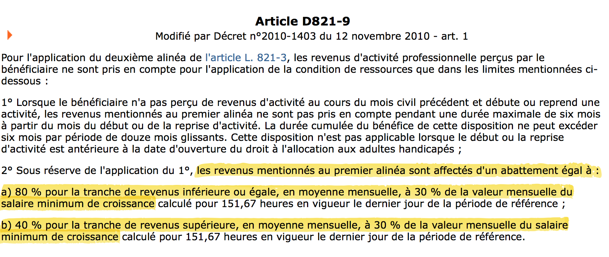
Euh… Vous pouvez répéter la question ??
😀 J’avoue avoir du relire plusieurs fois avant de comprendre ce que cela signifiait…
Explikatzione !
Prenez l’ensemble des revenus que vous avez déclaré. Ce montant, on va le découper en 2 tranches : une partie inférieure à 30% du smic brut, et l’autre qui lui est supérieur. Ensuite on applique à chacune de ces tranches un abattement différent : un abattement de 80% pour la première, et un abattement de 40% pour la seconde. Enfin la somme des deux montants ainsi abattus constitue l’assiette des ressources que l’on recherchait.
Un dessin valant mieux qu’un long discours, je vous récapitule tout ça sur ce joli schéma :
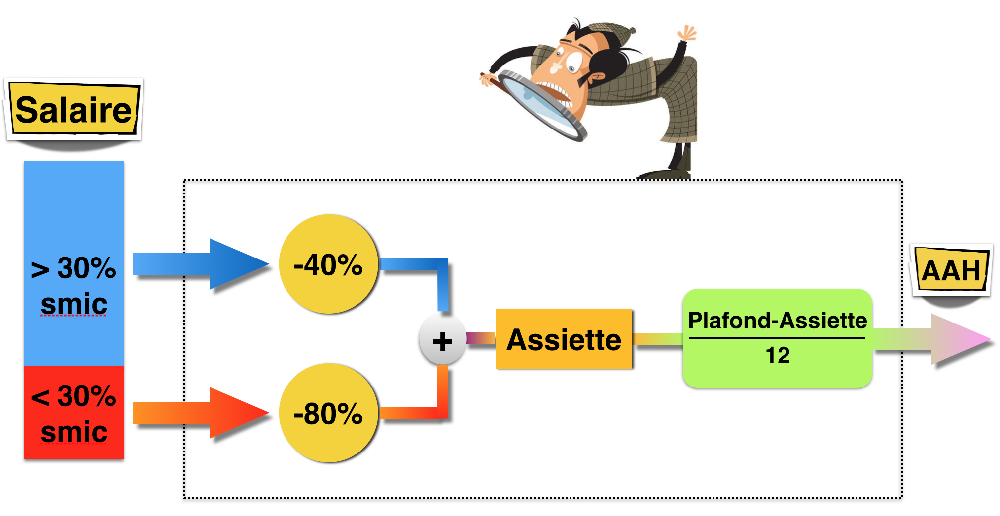
Nous venons de percer le mystère de la boite noire AAH ! Mais comme je vous vois encore hésitant, reprenons avec un exemple 🙂
Exemple : Je vous ai confié que mon salaire net imposable était de 1471,53 € par mois.
Puisque ce salaire est issu d’une activité professionnelle, je suis concerné par la gestion trimestrielle, qui finalement ne fait en sorte que de réévaluer chaque trimestre l’AAH pour s’adapter de manière plus réactive aux éventuels changements de salaires d’un mois à l’autre. Mais au fond le même calcul s’applique que ce soit en gestion annuelle ou trimestrielle. En effet, quoiqu’il en soit la somme des revenus perçus sur l’ensemble d’un trimestre est annualisée (simplement en multipliant la somme par 4), avant calcul.
Procédons par étapes :
1) Annualisons les montants. Dans mon cas mon salaire est fixe, donc sur l’année cela représente si vous vous souvenez bien :
revenus net imposable annuel = 12 x 1471 = 17 652 €
2) Découpons cette somme en deux tranches : l’une < à 30% du smic, l’autre >
En 2014, on a les chiffres suivants :
smic brut mensuel = 1445,38 € –> smic brut annuel = 12*1445,38 = 17 344,56 €
Ainsi 30% du smic brut représente sur l’année :
30% du smic brut = 0,3 x 17 344 = 5203,37 €
La découpe donne donc :
17 652 = 5203,37 + 12 448,63
3) Appliquons l’abattement de 80% et 40% sur chacune des tranches :
abattement 80% : 5203,37 - 0,8 x 5203,37 = 1040,67 €
abattement 40 % : 12 448,63 - 0,4 x 12 448,63 = 7469,18 €
4) Calcul de l’assiette des ressources (sans la virgule) :
assiette = 1040,67 + 7469,18 = 8510 €
5) Calcul de l’AAH mensuelle :
En 2014, la plafond des ressources est de 9482,16 €, d’où :
AAH = (plafond - assiette)/12 = (9482,16 - 8510)/12 = 81,01 €
Je vous donne la preuve en image que c’est bien l’AAH que je touche chaque mois :
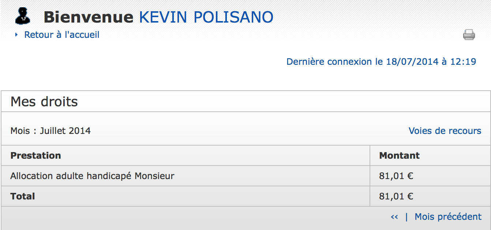
Et comme la pédagogie est l’art de répéter les choses, je vous redonne les étapes en image. Pour d’autres exemples en gestion trimestrielle avec des salaires qui varient vous pouvez vous reporter à la circulaire de la CAF de novembre 2010 page 60 [AAH 53],10 toujours en vigueur.
10 Circulaire n°2010-13 de la CAF du 17 novembre 2010, p.60 AAH 53 - lien
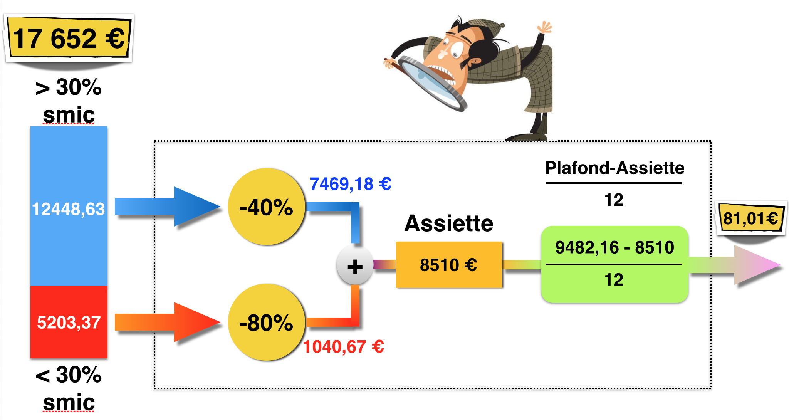
Allez, comme je suis très sympa je vous donne même la formule pour calculer l’assiette en deux coups de cuillère à pot 😉
Faire un abattement de 80% d’un montant revient à en conserver 20%, de même faire un abattement de 40% revient à en conserver 60%, donc :
assiette = 5203,37 x 0,2 + (revenus annuels - 5203,37) x 0,6
Ce que l’on peut encore réécrire :
assiette = revenus annuels x 0,6 - 5203,37 x 0,4
Soit :
assiette = revenus annuels x 0,6 - 2081,35
Vérifions :
assiette = 17 652 x 0,6 - 2081,35 = 8510 € [OK]
Attention : Cette formule n’est valable que si vous percevez des revenus supérieurs à 30% du smic brut ! Sinon on obtient une assiette négative. Dans le cas contraire, si les revenus annuels sont inférieurs à 30% du smic brut, seul l’abattement de 80% est appliqué :
assiette = 0,2 x revenus annuels
Exemple : L’année dernière, début 2013, je ne travaillais pas encore, j’étais donc en gestion annuelle. Le montant de mon AAH était par conséquent calculée sur les revenus de l’année 2011, qui s’élevait à 770 €, c’est-à-dire pas grand chose. Toutefois ces faibles revenus annuels (inférieurs à 30% du smic brut : 5203,37 €) ont quand même un léger impact sur l’AAH, calculons l’assiette avec seulement l’abattement de 80% :
assiette = 0,2*770 = 154 €
Ainsi l’AAH qui m’était versée s’élevait à :
AAH = (9482,16 - 154)/12 = 777,35 €
La preuve en image :
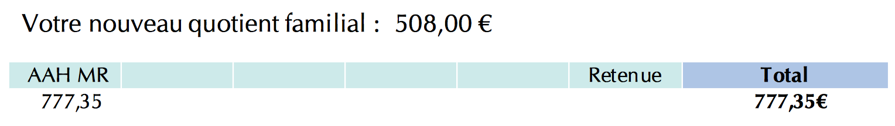
Conséquences :